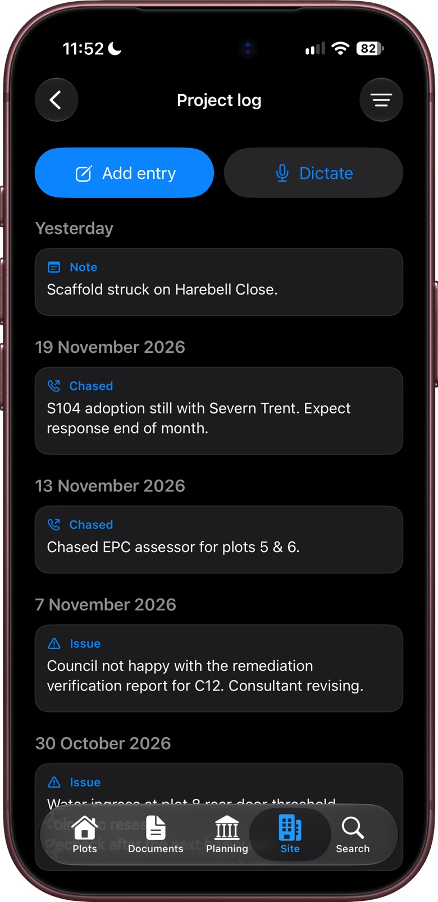
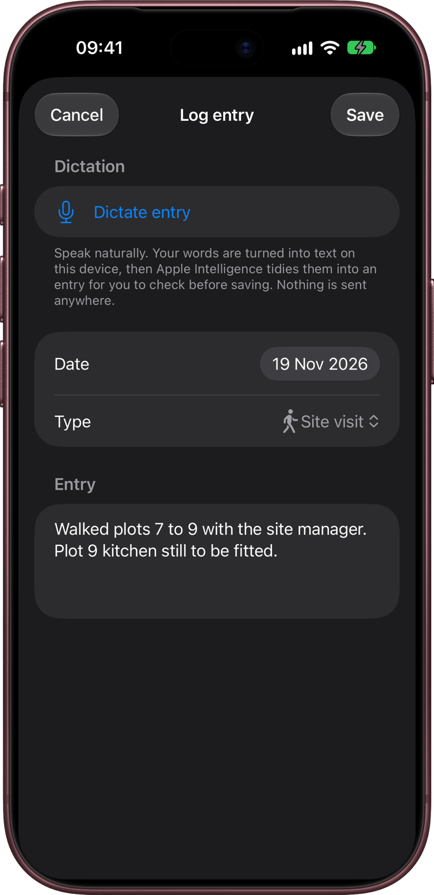

The project log is a dated diary for the whole site: site visits, problems found, decisions made and paperwork chased. It's quick to add to on site, and it gives the office a record to look back on and report from at progress meetings.
This chapter covers adding entries by typing or speaking, finding them again, and how the log appears in the progress report.
Opening the log
Open a project, go to the Site tab and tap Project log. The card shows how many entries there are and when the latest was added, for example "9 entries, latest today".
The Meadow View Phase 2 sample project has nine entries, from taking over the site from the previous agent to yesterday's note that the scaffold was struck on Harebell Close. It's a good place to look around.
Entries are listed under date headings, such as Today, Yesterday or 12 November 2026, with the newest at the top. Each entry shows its type, the text, and on a shared project who wrote it.

Types of entry
Each entry can be given a type, so you can pick out what matters later:
| Type | Use it for | Example |
|---|---|---|
| Note | Anything else | "Scaffold struck on Harebell Close." |
| Site visit | Visits, inspections and walk-rounds | "Site visit with client. Plots 2–4 accepted subject to minor snags." |
| Issue | Problems that need dealing with | "Water ingress at plot 8 rear door threshold. Joiner to reseal." |
| Decision | Anything agreed, so there's a record of it | "Took over as employer's agent from Harper Lane." |
| Chased | Paperwork or answers you've asked for again | "Chased EPC assessor for plots 5 & 6." |
Adding an entry
- Tap Add entry.
- Check the Date. It starts as today; tap it to change it, for example when writing up yesterday's visit.
- Choose a Type, or leave it as Note.
- Type the entry under What happened?
- Tap Save.
If you tap Cancel after typing something, KeyCheck asks whether to discard it, so nothing is lost by accident.
Entries record the day, not the time. If the order within a day matters, say so in the entry, for example "Morning visit".

Dictating an entry
On site, it's often easier to speak than type. Tap Dictate instead of Add entry, and KeyCheck starts listening straight away.
- Speak naturally. A bar at the bottom shows Listening, with a meter that moves as you speak, and your words appear above it: words still being worked out are shown in grey.
- Tap the red Stop button beside the bar when you've finished.
- Check the entry, then tap Save. You can change anything before saving, or tap Dictate again at the bottom to start over.
What happens after you stop depends on your iPhone:
- On iPhones with Apple Intelligence, KeyCheck tidies what you said into one to three short sentences, keeping every fact. It also chooses the type, and sets the date if you said when it happened, for example "yesterday" or "last Tuesday" (up to a month ago). What you actually said is shown above, under What you said, so you can check nothing was lost. Check the date, type and entry before saving.
- On other iPhones and iPads, your words go into the entry as you said them. Choose the type and date yourself.
Good to know:
- The first time, KeyCheck asks to use the microphone. If you said no, dictation explains how to turn it on in Settings → Apps → KeyCheck.
- The first time in a language, your iPhone may need to download Apple's speech model, so be online. After that it works without a signal.
- Everything happens on your device. Your speech is turned into text on your iPhone, iPad or Mac, and isn't sent anywhere. The recording isn't kept.
- If nothing was heard, move a little closer to the microphone and try again.
- Dictation only fills in a new, empty entry, so it never replaces something you've already written.
Finding entries
When the log gets long, tap Filter (top right) to show one type at a time: Site visit, Issue, Decision or Chased. The screen's title changes to the type you've chosen. Choose All entries to see everything again.
Changing, copying and deleting entries
- Change an entry: tap it, make your changes and tap Save.
- Copy an entry's text, for example to paste into an email: touch and hold it and choose Copy text.
- Delete an entry: swipe left on it and tap Delete, or touch and hold it and choose Delete. A banner offers Undo for a few seconds.
On shared projects
On a shared project (chapter 12), KeyCheck adds your name from Settings → You → Your name when you save an entry, so everyone can see who wrote it. If someone else edits it later, it shows their name instead. On projects that aren't shared, no names are saved.
The log is kept with the project when it syncs with iCloud, and when you send it as a KeyCheck file (chapter 13).
People you've shared a project with as view only can read the log and copy entries, but can't add or change them.
The log in the progress report
The progress report (chapter 11) has a Project log section, with the date, type and text of each entry, newest first. On a shared project it also shows who wrote each one.
When you create the report, two switches under Include control the log:
- Project log: includes the section.
- Whole project log: includes every entry. When it's off, the report only includes entries in the report's period, such as Last 14 days or Since last report, and the section says so, for example "3 entries in the last 14 days".
On the Mac
The log works the same way on the Mac. Choose Site (⌘4) and click Project log. Right-click an entry for Edit, Copy text and Delete, and press ⌘[ or click Back to return to the Site page. Dictation uses the Mac's microphone.
The log is the site's memory. Record each chase, phone call and decision on the day, even in a few words, and before a progress meeting the report's Project log section shows everything that happened since the last one. Use Filter → Issue to check nothing has been left unresolved, and Filter → Decision when someone asks what was agreed and when.